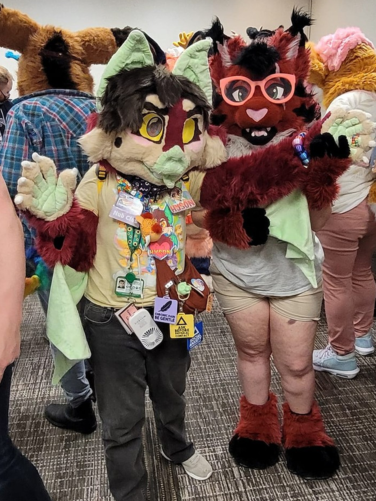
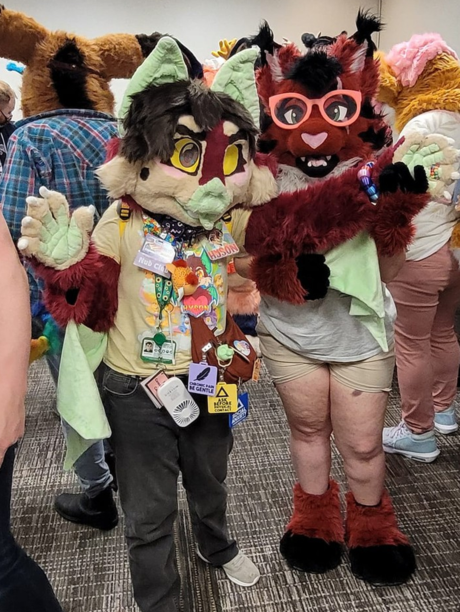

Fursuits, Conventions, and Anniversaries
| 2006 words
Been a long time since I've sat down and written a new journal entry, hasn't it? In my defense, most of my life between entries has focused mainly on finishing my fursuit and preparing for the convention.
That's right I should mention, I finally finished my fursuit! He's just a partial right now, with a head, pair of handpaws, armsleeves, and a tail, but I hope to one day (when I have the money) expand him to be a fullsuit! Overall I'm trying my hardest to be proud of the finished product, and in a few ways I am because I had to learn a lot of new skills- I've never done things like a fully lined head, making my own pattern for the handpaws, making armsleeves, and generally taking my work more seriously and making sure I understand every step of the fursuit-making process. On the other hand, I also can't help but to feel like his flaws make him stick out like a sore thumb, although nobody at the convention who complemented my suit seemed to notice.

On a similar topic, the convention was a wonderful time! I'm no stranger to conventions, but I considered this to be my first venture into the full furry convention experience, since my last year at this convention was just to attend the Furby panel and nothing else. But I'm happy to say that the convention was a success! It was also my first time staying at a hotel room by myself, which I think went pretty smoothly (even when I had a bit of trouble with my keycard, which I'll go into a bit later.)
To give a summary of my events, I'll write a brief bulletpoint list of what I was up to at the convention.
Friday:
- Got into my hotel room in the morning pretty smoothly and settled into it before heading to my first panel, which was appropriately titled "THOSE DARK CANADIAN CARTOONS TURNED ME INTO A FURRY!" It was part slideshow, part gameshow where we had to yell out the names of the Canadian TV show that had anthropomorphic animals in it. My knowledge in obscure Treehouse TV shows got me a score of 30, by the way.
- Then I met up with my friend and talked with them and it's friend in between panels, before the next panel would start. This one was hosted by FurScience, who are a group of scientists who study various fandoms, most notably the furry fandom! This panel was mainly discussing the contents of their new book, which goes into the psychology of furries, including the demographics of the community, people's motivations for being in the fandom, how their identity intersects with their furriness, and a ton more. It was actually super interesting and fun, and I can't recommend diving into their work enough!
- Afterwards I believe I went down to check out the Dealer's Den, which was very good this year actually. Got to deliver some badges with some of the vendors I did trades with, and ended up getting a good haul by the end of the con!
- I also checked out a panel called "A Queerer History of Furry," which is exactly what it sounds. It was fun, but I headed out early because it was mainly stuff I already knew. By the way, did you know that Bugs Bunny was allowed to do drag back in the day because Warner Bro's was like "Yeah he's totally doing this to abide by the laws in place that state that gay people in media must be presented in a demeaning way. Yeah we're mocking people in drag by doing this, trust us"
- Before I met up with my friends again I think I spent my time going back and forth between hanging out in the lobby in-suit and going to my room, but I don't quite remember. It's not important I don't think.
- After that I met up with my friends again and went to the Bluey watch party, which was a lot of fun! Although I've realized that I can only watch Bluey in small increments, otherwise it starts to hit me hard in the trauma.
- Afterwards, we all headed to our rooms. Except I mistakenly left all my keycards in my room for some dumb reason, so I had to go back down and ask for another keycard. Crashed pretty hard that night, but unfortunately didn't end up sleeping all that well for the next day.

Saturday:
- First thing in the morning was the plushies panel, and it was so very fun to be able to talk about my most dear special interest with a bunch of other like-minded people! Pictured above is the group photo we all ended up taking of all of the plushies we brought- mine is the tanuki sitting near the birthday cake bat!
- Afterwards I hung out in my friends' room to hang out, which ended up cutting into the dance competition, but I didn't mind because I enjoyed talking with them! Actually, the room for the dance competition ended up getting full, so I had to watch part of it from the gaming lounge, where it was being livestreamed on one of the TVs. I didn't stay for very long though, since I wanted to eat and rest up a bit for the fursuit walk later that day.
- Unfortunately for all of us, the fursuit walk got completely canceled due to the fact that a storm had just started rolling in when it was supposed to take place, so my friends and I decided to order a pizza and hang out in one of their hotel rooms. We had a lot of fun just shooting the shit and watching some videos, although it was strange to be the only person in the room who couldn't speak French LOL.
- Eventually we made our way down to the night market, which I ended up getting into thanks to my accessibility needs, and it was fun to see what everyone had for sale! Didn't buy anything unfortunately since I got in late, and the rest of my group didn't end up getting in.
- Later I went to the drum 'n' bass and happy hardcore DJ sets for the night dances, which was way more fun than I was expecting! It truly does hit different when you go to a rave and hear this music live.
Sunday:
- This was my quietest day, and started with watching the fursuit games with some of the friends I met the night before. I didn't realize you had to sign up beforehand to participate, but I think it was best for me because I was watching it and thinking to myself "I am way too disabled for this."
- After that I had to clean out my hotel room and check out, and had to say goodbye to my friends since they wanted to leave early to head to the mall. I really wish they were both closer to me, it's never easy having to say goodbye to such wonderful people who made my convention experience unforgettable, but I know for sure I'll be meeting one of them again next year!
- Had a lot of time to wait for my next panel, in which I didn't really do much except be on my phone, walk around the hotel lobby a bit, and check out dealers one last time for some last minute shopping.
- Last panel and event for my day was the Nub Club, where we all got to take a picture together of all of us and our nub tails! I left a bit early since I had to be picked up not long afterwards, which concluded my time at the convention
All in all it was an incredible time, and I'm not only planning on going next year, but I'm also looking to see if I can attend Furnal Equinox in March as well! So far I have the logistics worked out, I just need to figure out how I'm going to pay for a room at the main hotel (since I don't imagine I'll be able to adequately walk the distance needed to stay at one of the overflow hotels. Although, I do know they have a shuttle service, so I'll just have to see when it gets closer.) Below are some pictures of myself and some of the wonderful people I met this year.


 

And for good measure, here's my big haul from the convention this year! I think my favourite things I got this year include my fursuit kandi and collar, both of the badges I got from some of the wonderful artists vending at the convention (artists are JefferyDraws and King's Treasures respectively!) the Gatomon and fursuit head base keychains, the Furby and Galarian Ponyta stickers, and the disability pride pin!

On a more somber note, this August also marks one year since my beloved friend, Hyde, passed away. It's been a hard thing to cope with, knowing that he isn't ever going to come back, because I often get stuck wondering to myself what he's up to, only to remember that he's gone. His passing hasn't been easy for any of us who knew him well, but I feel relief in knowing that we're not going to let him be forgotten.
I hate to end this journal entry on such an upsetting topic, and it doesn't help that I've been experiencing bad post-con depression on top of all of this. August has become a hard month for me to get through, but getting in touch with my local furry scene and going to furmeets in the area has definitely helped me to cope with both Hyde's loss and the post-con depression, so I at least have those to continue looking forward to.
I hope to continue working on this site, now that I have more free time with the convention having come and gone. I especially want to get the shrine page for Hyde put together really soon, and I hope I'm ready to take on the task, as I imagine it's going to be a lot for me to handle emotionally.